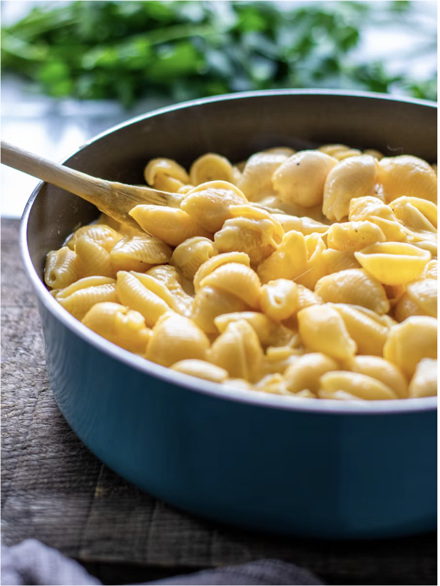

Recipe List
Dad's Mac & Cheese

Description
This mac & cheese has been a part of my life from the beginning.
It is creamy and gooey with just the right amount of stringiness to the cheese.
8 oz macaroni - the shape is up to you!
8 oz cheddar cheese
1 Tbs butter
1-2 Tbs flour
1 can tuna (optional, but recommended!)
1 cup whole milk
Steps
Preheat oven to 350
Cook macaroni to al dente in large pot. Drain and leave in drainer - can add a small amount of butter to prevent sticking
In same pot, melt the butter over low heat, then slowly stir in flour until it forms a paste.
Can continue until it starts to brown if you prefer that flavoring.
Slowly add & stir in a small amount of milk at a time until all milk & flour is combined.
Once all milk is in, continue to stir over heat until mixture starts to thicken.
Slowly mix in cheese, rasing heat if needed to melt it, then tuna
Once cheese is melted, add macaroni back to pot and mix well
Bake in oven-safe dish for 20 minutes
Allow to cool before serving